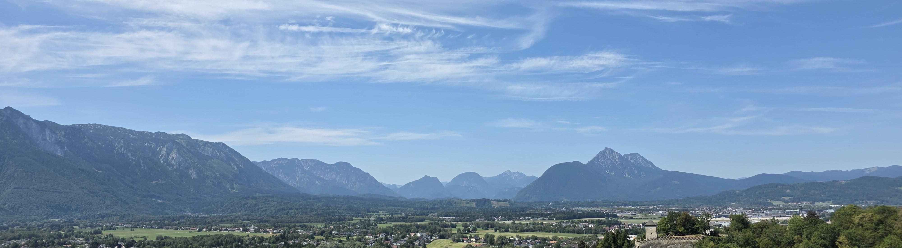

Talks
- "Private polynomial-time estimation in stochastic block models", Second Workshop on Mathematical Data Science, Schluchsee, Germany, July 2026
- Talk on my first and second PhD projects, PhD Open Day, University of Cambridge, UK, March 2026
- "On the Benefits of Accelerated Optimization in Robust and Private Estimation", ML Retreat, University of Cambridge, UK, October 2025
- "On the Benefits of Accelerated Optimization in Robust and Private Estimation", StatMathAppli Conference, Frejus, France, August 2025
- "Bias Variance Trade-Off in Gradient Compression for Federated Learning", Presentation at the end of TUM PREP 2023, Munich, Germany, August 2023
Conferences
- The 49th Research Students' Conference in Probability and Statistics, University of Cambridge, UK, September 2026 (co-organizer)
- Second Workshop on Mathematical Data Science, Schluchsee, Germany, July 2026
- StatMathAppli 2025, Villa Clythia, Frejus, France, August 2025
- APTS week 2025, University of Warwick, UK, July 2025
- LSIT 2025, University of Cambridge, UK, May 2025
- Modern Paradigms in Generalization, Simons Institute, Berkeley, California, USA, August 2024 - December 2024